Salí por la mañana de Toledo camino de Plasencia, primera ciudad grande y monumental del viaje. Pare en Oropesa para ver el castillo y el palacio condal que no pude visitar por dentro debido a ser justamente las fiestas del pueblo. Pude ver la iglesia de la Asunción desde fuera y contemplar su bella plaza Mayor y ayuntamiento. No me entretuve más de 1 hora.
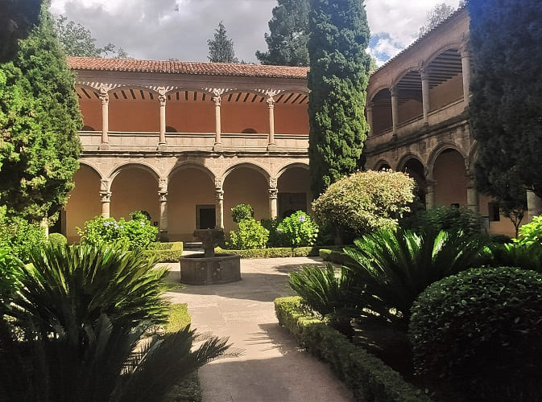
Ya al poco de pasar de Talavera de la Reina me desvie para el noroeste, con el fin de visitar el monasterio de Yuste que se encuentra en Cuacos de Yuste. Este monasterio que tiene dos amplios claustros y una bonita iglesia tiene importancia debido a que fue el lugar donde falleción Carlos V, el hombre español junto con su hijo Felipe II más poderoso del mundo en sus tiempos. El monasterio es patrimonio de la humanidad, pero salvo por la importancia de haber pasado sus últimos años Carlos V no tiene nada especial. Es bastante austero y eso si puedes visitar las dependencias donde vivio el rey aunque no esta permitido realizar fotografías ni en las dependencias ni en la iglesia.
Una vez visto pase a ver el pueblo, Cuacos de Yuste, cuya plaza porticada esta muy bien conservada y la fuente es la tipica de los pueblos de esta zona, los pueblos de la Vera donde es famoso su pimenton, el de la Vera. Allí tomaría un baño también en la piscina natural llamada El Bañaero, en el arroyo que pasa por el.
.
Pasado Cuacos pararía en Garganta de la Olla otro pueblo de la Vera, muy típico. Este pueblo una casco bastante bien cuidado y muy turistico donde venden productos de la zona. Esta lleno de casas antiguas que han conservado su aspecto durante años y una iglesia principal muy bien cuidada. Allí podemos encontrar unas piscinas naturales llamadas Las Pilatillas, en las que si sigues arroyo adentro encontraré varias cascadas naturales, eso sí el agua bastante fría.
Una vez finalizada la visita de estos dos pueblos y habiendo comido tomé rumbo hacia Plasencia.
En Plasencia dejaría el coche muy cerca de la muralla. Fue construida a finales del siglo XII con fines defensivos, siendo su principal promotor Alfonso VIII de Castilla, quien en 1186 fundó la ciudad para defender tanto su frontera meridional con los territorios andalusíes como su frontera occidental con el reino de León. Aunque en los períodos del Renacimiento y Barroco se llevaron a cabo innovaciones artísticas en sus puertas de acceso, el resto de la muralla se conserva casi intacta desde sus orígenes, cercando todavía en la actualidad el acceso al recinto intramuros.
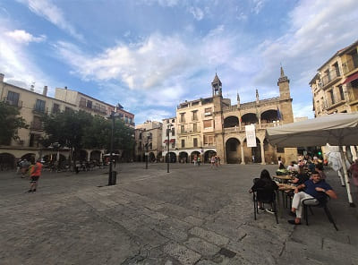
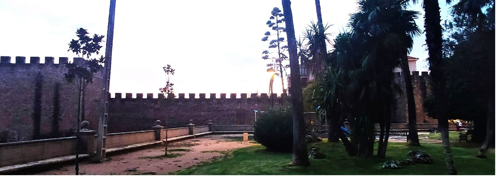
Entraría muy cerca de la puerta del Sol por la parte nordeste por la calle Rey que lleva directamente a la plaza Mayor. En esta calle hay numerosas casonas palaciegas como la de los Tamayo o la de las Argollas y es tan importante como la calle Mayor. La Plaza Mayor es bastante grande y abierta y en ella destaca el edificio del Ayuntamiento. Este tiene un estilo entre gótico y renacentista y en el se encontraba la carcel en su antiguedad. Destaca un escudo de Felipe IV en su lateral.
Bajando por la calle nos encontramos la iglesia de san Esteban y el monasterio de la Encarnación, antes de llegar a la plaza de la catedral. Es una de las pocas catedrales de España que conservan su parte vieja y su parte nueva, ya que no se restauro la antigua si no que se conservo y se amplio.
 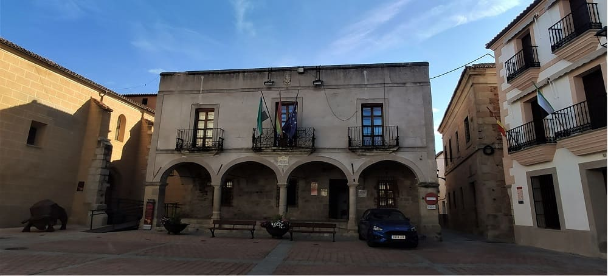
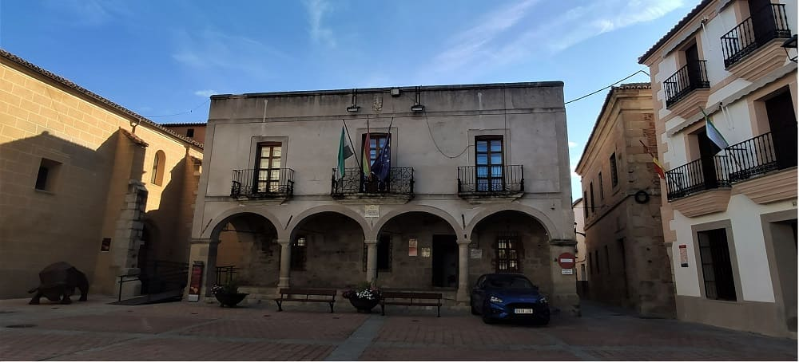
Salí del hotel de carretera directo a Coria, ciudad que quería conocer debido a que cuenta con una catedral de las tres que hay en extremadura.
Fundada antes de que los romanos ocuparan la península ibérica, y conocida como Caura, los romanos le dieron su actual nombre en latín, Caurium, y más tarde a esta ciudad se le concedió la ciudadanía romana. Posteriormente, en la época visigoda, se creó la Diócesis de Coria que, salvo por los años de ocupación musulmana, mantuvo a Coria como sede episcopal hasta el siglo xx, cuando la cabecera de la diócesis se desdobló para compartirla con Cáceres. Tras la Reconquista, Coria pasó a ser capital de un señorío al cual pertenecieron pueblos que aún llevan el nombre de Coria como Guijo de Coria o Casillas de Coria.Tras la disolución de este, Coria pasó a ser capital del partido judicial de Coria.
En la actualidad, Coria es la ciudad más importante del noroeste de la provincia y un importante centro comercial y turístico, al conservar gran cantidad de monumentos y celebrar anualmente una fiesta de interés turístico de Extremadura y nacional en honor de san Juan.
La catedral me parecio bastante austera, no comparable a la de Plasencia pero si que es cierto que tenía todo lo necesario para ser catedral y no concatedral. Después pase por la antigua carcel de la ciudad hoy museo de la ciudad y de los toros. Me lleve una grata sorpresa al ver con que cuidado habían montado todo en el museo, contando entre otros con 5 toros disecados completos. Ni en Sevilla y Huelva un museo contaba con tantos toros de esa indole. Además bastante material fotográfico ya que Coria es uno de los pueblos de España cuya tradición va muy ligada al toro. Recordar que en esta zona los grandes terratenientes y ganaderos han sido los que han tenido más poder en la historia. Además visite la plaza del ayuntamiento y el castillo que se puede ver en la imagen junto con la murallla y su antigua puerta medieval por fuera. También merece la pena destacar el palacio de los duques de Alba, la Alhondiga y los restos de la antiuga via Dalmacia de Roma.
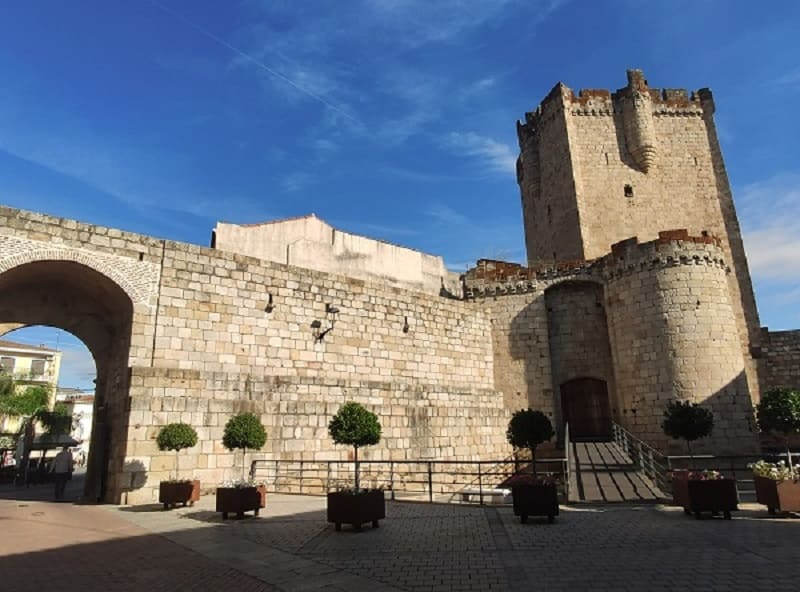
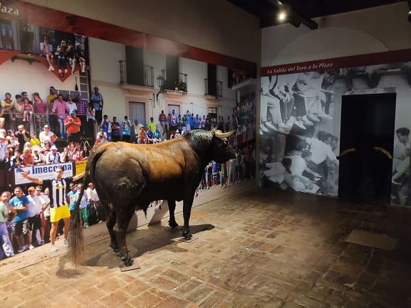
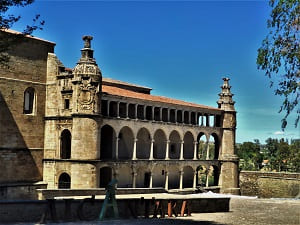
Pararía en Mercadona para coger provisiones para comer sobre la marcha. Mi siguiente destino fue Alcantara, ciudad conocida por su puente romano. El río que cruza tenía un color muy verdoso de la cantidad de algas que había en esa época del año, primeros de septiembre después de un verano muy caluroso. Me llamo la atención también la presa que hay muy cerca del puente. Después de ver el puente que debio de estar muy defendido en tiempos de Carlos V que fue quien lo restauro, ya que es la puerta desde Portugal a toda Extremadura.
En el pueblo como lugares relevantes tiene la iglesia de santa María de Almovocar, la plaza de la corredera con varias casas nobles y una en ruinas que debio de ser importante en su epoca por las dimensiones y el conventual de san Benito que esta repleto de escudos de los Austrias Españoles en su exterior y en su interior. Recordemos que los Alcantaras eran familias muy cercanas a la monarquía y ayudaron mucho en su día a la reconquista de España con los árabes.
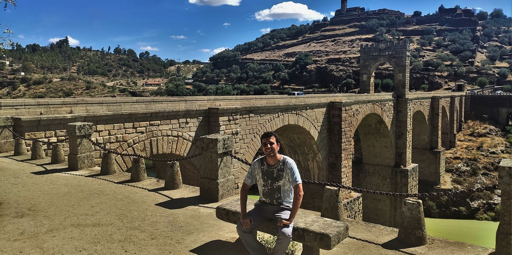
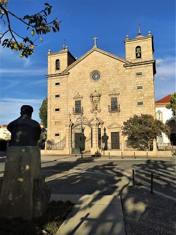
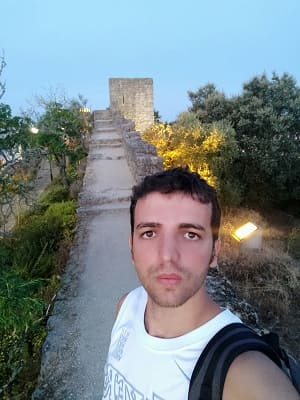
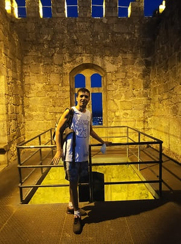
Tras pasar esta localidad entraría a Portugal. Debido a las restricciones covid tuve que aportar pasaporte COVID en el hotel.
Por último llegaría a Castelo Branco donde me alojaría. Esta ciudad tiene poco patrimonio, es más bien una ciudad residencial que aglutina mucha de la población rural de la zona.
Como sitios visitables encontramos el ayuntamiento renancentista y su plaza, la plaza del mercado, el castillo en lo más alto y sus murallas, el palacio de los vizcondes de Portalegre, edificio renancentista que alberga la sede del gobierno Civil del distrito de Castelo Branco. Recordemos que Portugal se divide en distritos, y estos a su vez se podrían agrupar en regiones (lo que en España sería provincias y comunidades autónomas). Siendo un total de 18.
Como edificios religiosos la iglesia de san Miguel, hoy convertida en concatedral, el palacio episcopal, la casa del Obispo y sus jardínes, los cuales tienen varias figuras en bronce y un gran estanque en el parque adyacente. Muy cerca se encuentra el convento de la Gracia y además también cuenta con alguna capilla o ermita como la de Nuestra Señora de la Piedad.
Este día lo elegí para visitar la piscina praia de Castelo Branco, que es un reclamo desde su ignaguración hace 2 años. Además coincidía con el último día de apertura ya que estabamos ya a 13 de septiembre, final casi del verano y además el coronavirus empezaba a subir de nuevo.
Como allí en Portugal desayunan muy pronto, de 6:30 a 8:30, me fui a encontrar algun pueblo bonito cerca y pare en Nisa. Este pueblo tiene un pequeño casco historico bastante bien cuidado, con casas muy homogeneas blancas y con un par de museos de telares, una de las tareas típicas de la zona. De camino a Nisa vería el río en Porto Rodao, y su excepcional paisaje donde al parecer existen actividades naúticas tipo kayak en un pequeño embarcadero en el pueblo.
El agua de la praia de Castello Branco estaba bastante bien, y además le pega el sol a casi toda la superficie aunque este un poco nublado. Además había muy poca gente con lo que no había que preocuparse mucho ni por la seguridad de tus cosas ni por nada en la piscina. La cubierta de la piscina esta hecha de un material bastante bueno, no es de polifibra, y además cuenta con numerosos puentes en el interior que le dan un aire más de playa que de piscina, así como la decoración.
Ya por la noche iría a cenar a uno de los bares de la zona, siendo la hora de cenar allí sobre las 20 horas y después subir a lo más alto de la ciudad, al castelo para poder contemplar la ciudad de noche, estando varios de los edificiós emblemáticos con iluminación externa.
Para realizar la vuelta a España decidí pasar por el este de Portugal y Salamanca. Las ciudades a mi paso fueron Covilha, segunda ciudad más grande del distrito de Castelo Branco, que ciudad universitaria en montaña. Desde la carretera ya se ven muchos edificios altos en la montaña y a lo lejos el casco histórico y es que esa ciudad en su origen tendría carácter defensivo. Destacan sus iglesias con los azulejos típicos portugueses y unas escaleras mecánicas que te suben a arriba así como ascensores que también han puesto en el otro lado de la ciudad para tener una vista panorámica mejor.
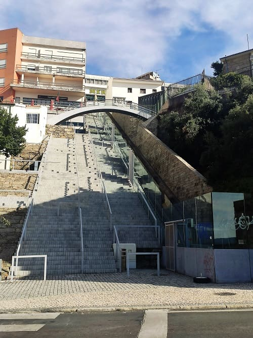
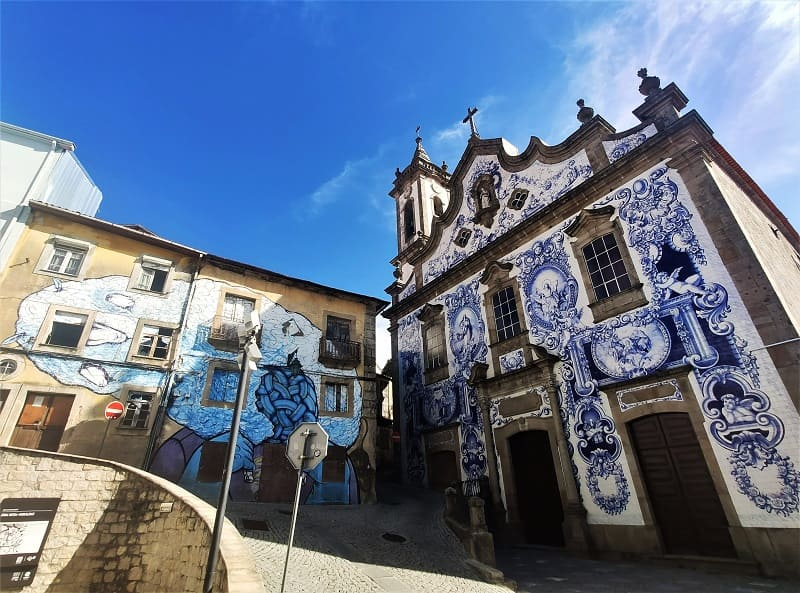
Al pasar Covilha ya estaría en el distrito de Guarda e iría a su capital. Guarda es una ciudad con un casco histórico de corte medieval bastante bien cuidado. Destaca la catedral y su gran plaza. Es de estilo gótico y manuelino el estilo portugués que tienen muchos de los edificios del siglo XV en el país. Cuenta con varias iglesias y una torre (Ferreiro) que le han puesto un ascensor moderno y unas buenas vistas a todo el casco. Al fondo puede verse lo que queda del antiguo castelo, la torre del homenaje.
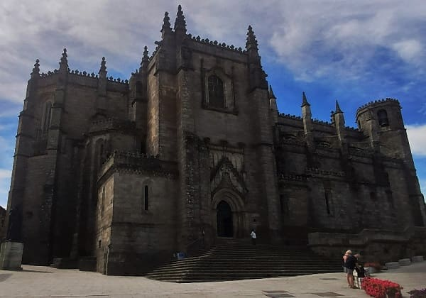
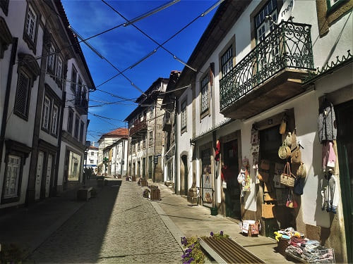
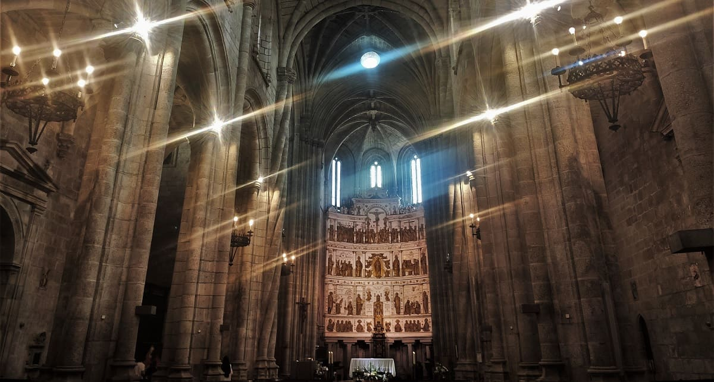
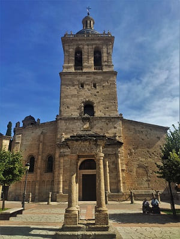
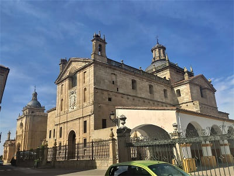
De Guarda me dirigí ya para España con destino Ciudad Rodrigo, una ciudad muy monumental salmantina que no suele pillar de camino a ningún sitio salvo como en este caso que te dirijas a Portugal desde Salamanca o viceversa. Buen momento para visitarla. Esta ciudad me sorprendió muy positivamente debido a que el casco histórico se encuentra bien delimitado por la muralla que esta conservada completamente. Esta se puede recorrer y cuenta con varios cañones posiblemente de tiempos de la invasión napoleónica.
Cuenta con una catedral de estilo gótico algo austera por fuera salvo por las portadas. Una de ellas tiene un friso de gran valor con personajes del antiguo testamento tallados en piedra, así como detalles en los capiteles y en la puerta con figuras de los evangelistas y de cristo.
El interior es de una catedral de estilo gótico de esa época que cuyo reclamo principal es el Pórtico de la Gloria o del Perdón con representación de los apóstoles y muchas figuras relacionadas con la vida de Jesús. El retablo de la catedral fue vendido a un museo estadounidense por necesidades económicas siendo de gran valor y ahora mismo lucen cuadros en su remplazo.
La ciudad cuenta con numerosos palacios y casas señoriales como el palacio de los Águila que tiene un patio con numerosos detalles de estilo flamigero, el palacio de los condes de Yeltes, el palacio Montezuma, la casa de las Cadenas, la casa Cueto, la plaza mayor tiene un ayuntamiento muy bonito que fue palacio en su día y cerca se encuentra la casa Cueto, la casa Vazquez, la de Herrera Maldonado, etc.
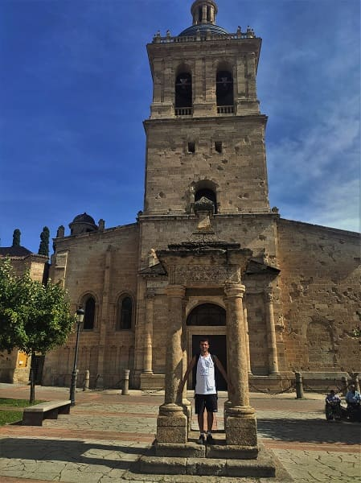
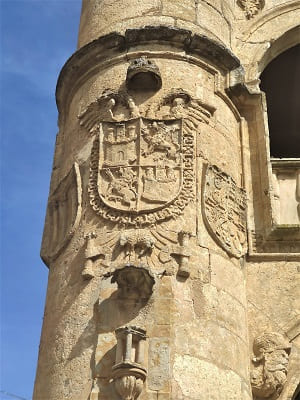
He aquí una lista de los distintos bienes patrimoniales de la ciudad:
Por la mañana salí camino a Hervas, uno de los pueblos bonitos de España. Dispone de un casco histórico muy cuidado con una de las juderías más grandes en un pueblo de España. Toda esta zona albergaba mucha población judía que permaneció en la península a pesar de la expulsión por parte de los reyes católicos. Además cuenta con un puente medieval muy antiguo de la época visigótica e incluso anterior.
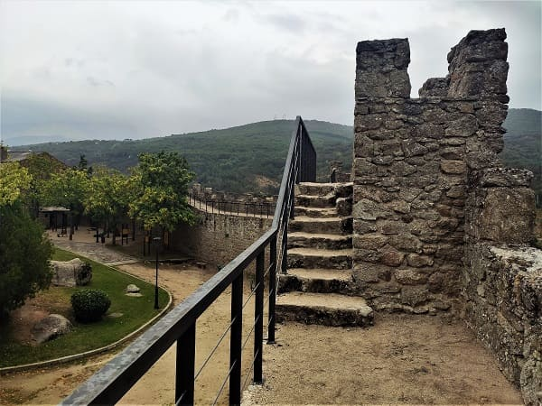
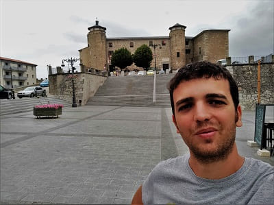
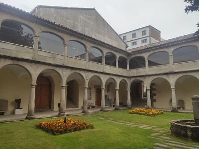
Después iría a Bejar que esta un poco más al norte, un pueblo bastante más grande e importante. Destaca la iglesia principal del pueblo, santa María la Mayor (imagen), el palacio ducal (en la segunda imagen) que es hoy instituto de secundaria, el convento de san Francisco convertido en museo y la extensa muralla. Esta muralla puede ser recorrida completamente y puedes la montaña que rodea la ciudad, ya que esta ubicada en una gran montaña de manera defensiva sobre la cual se levanta la muralla.
Existe también una estatua dedicada al hombre del musgo y es que en las fiestas de Bejar es tradición disfrazarse de esa manera e ir paseando por las calles.
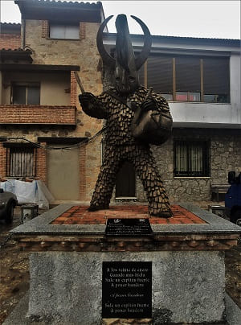
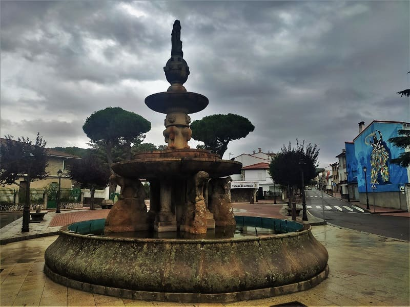
Ya visto Bejar podía o bien ir a Toledo volviendo sobre mis pasos o subir carretera arriba hasta Ávila para luego bajar de nuevo a Cáceres y ver los pueblos del valle del Jerte, visitando el mismo pueblo de Jerte. Para eso tuve que cruzar por el puerto de Tornavacas, en la que la carretera es de doble sentido y en la que hay bastantes curvas para primeramente llegar a Jerte, un pueblo ubicado alrededor de esta carretera que tiene la arquitectura típica de esta zona con su plaza mayor y su iglesia correspondientes. Más abajo visitaría Cabezuela del Valle, cuyas casas aportaladas y balcones de madera hacen también que el pueblo guarde su encanto.
Después subiría todo un puerto de montaña hasta llegar al pueblo más alto de toda Extremadura, Piornal, que esta a 1200m de altitud. El pueblo cuenta con una iglesia y una fuente muy típicas de la zona así como una fuente de la plaza Eras que esta adornada en su planta de leones y es bastante antigua. Este pueblo tiene una de las fiestas más singulares de Extremadura, llamado el Jarrasplas, un a figura que porta un gorro con cuernos y multitud de colores que desde tiempos remotos sale en procesión por el pueblo una vez al año y en la que los vecinos tienen que tirarles nabos y otras hortalizas como castigo por haber robado ganado o hortalizas de los huertos. Cada vez acude gente de más lejos y es por ello de que va provisionado de una buena armdura en los últimos tiempos de fibra de vidrio o de carbono. Existe hasta un museo con los trajes de Jarrasplas más antiguos y más curiosos.
El siguiente pueblo sería Pasarón de la Vera, un pueblo con una iglesia recientemente reformada con un retablo muy vistoso y de alto valor. Además cuenta con pinturas policromadas antiquísimas, a la derecha del retablo. Además destaca el palacio de los condes de Osorno.
Por último llegaría a Jarandilla de la Vera, pueblo recordado por ser uno de los pueblos que acogió a Carlos V antes de llegar al monasterio de Yuste para su retiro. Mientras se construía el monasterio estuvo viviendo ahí, donde viviría uno de sus hijos también, su hijo bastardo Jeromín. El palacio donde vivió que tiene los escudos de armas del emperador, y otros escudos heráldicos es hoy parador nacional y su patio es visitable.
En el casco histórico contamos con una bella plaza que vemos en la imagen y la iglesia de la Virgen de la Soledad.
© 2016 - All Rights Reserved - Diseñada por Sergio López Martínez
El sitio se mantiene gracias a la publicidad, por favor Desactiva Adblock para seguir navegando
He desactivado Adblock![[Valid RSS]](https://www.onepointsync.com/wp-content/uploads/2016/08/valid-rss-rogers.png "Validate my RSS feed")